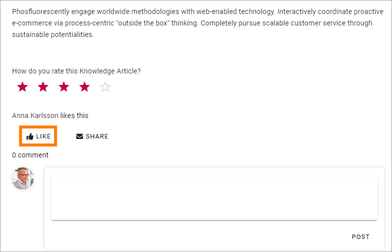
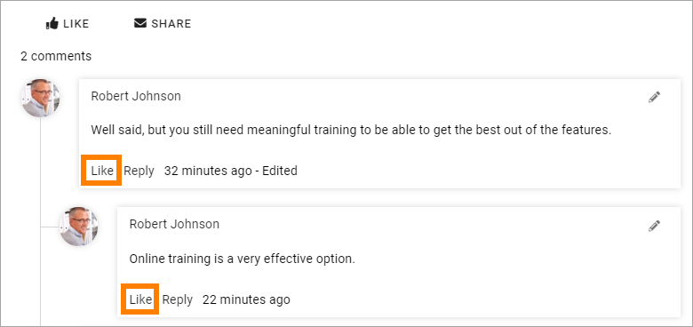
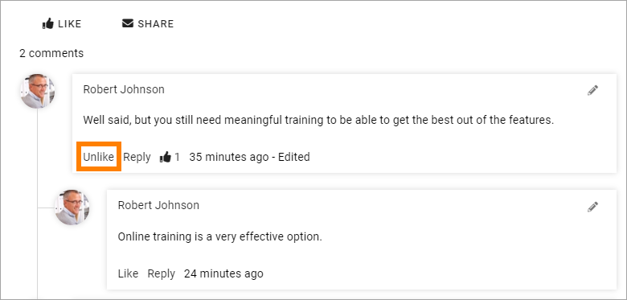
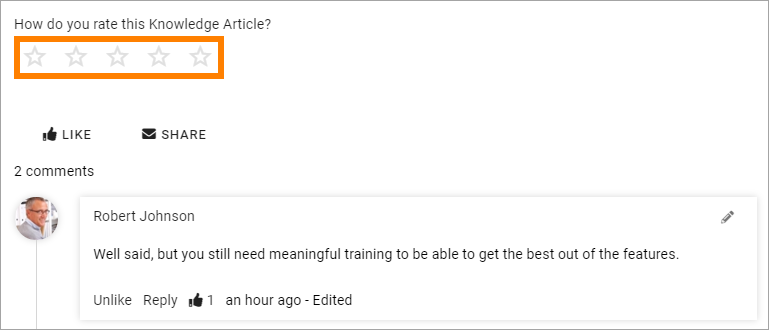

Like, share and rate Knowledge articles¶
A community can be set up in several ways but in the defaul setup Like, Share and Rating are available.
To show you appreciation for a Knowledge article you can like it and you can like comments as well. You can also share a Knowledge article with other colleagues.
Like a Knowledge article or a comment¶
The start page for Knowledge articles displays the number of likes for every article and the list “Popular” sorts the articles with the most likes in ascending order.
Do the following to like an article:
Click “Like” at the bottom of the article.
The Like icon now changes to show that you have liked the article (you can only like it once), for example:

You can click this icon to unlike the article, if you want to do that.
To like a comment or a reply, click “Like” in the comment field or in the reply field.
Like now changes to unlike. You can like and unlike a Knowledge article or a comment anytime.
Rate a Knowledge article¶
The list “Top Rated”, available on the start page for Knowledge articles, displays the article in rating order.
You can set a rating for how valuable you think the information in the article is. Just do it by selecting a number of stars:
Note that you can rate in half steps if you’re careful when filling the stars. Here’s an example with rating 3.5:

You can change your rating anytime.